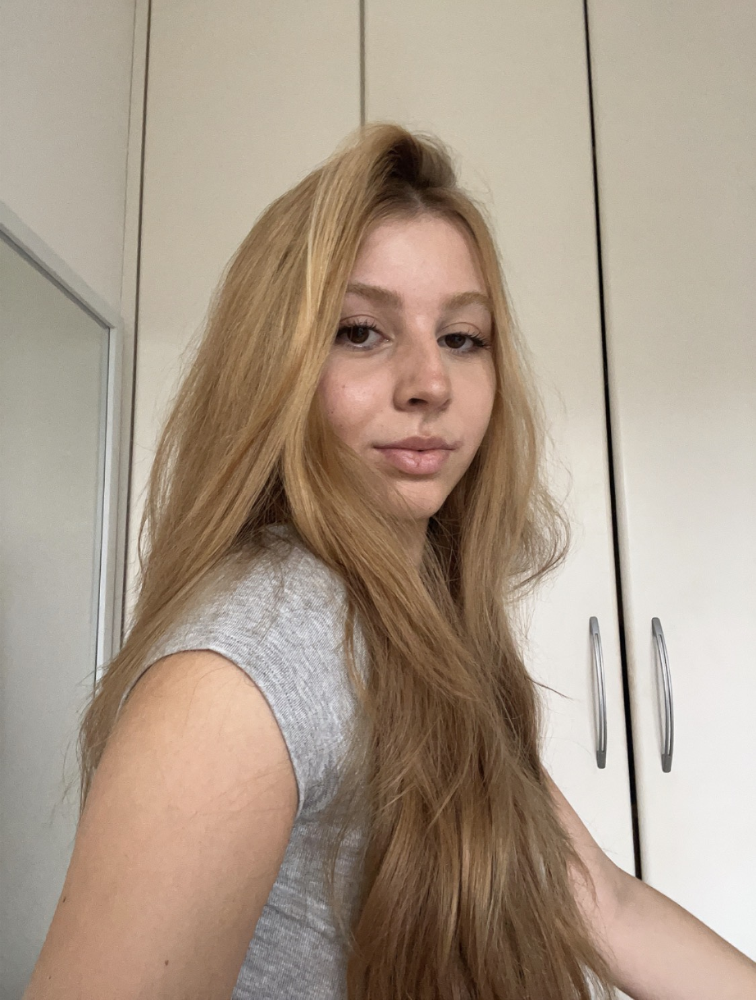
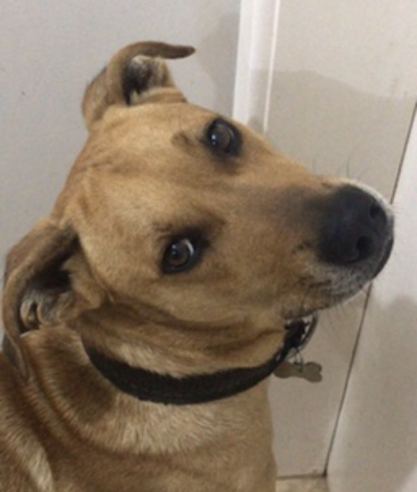
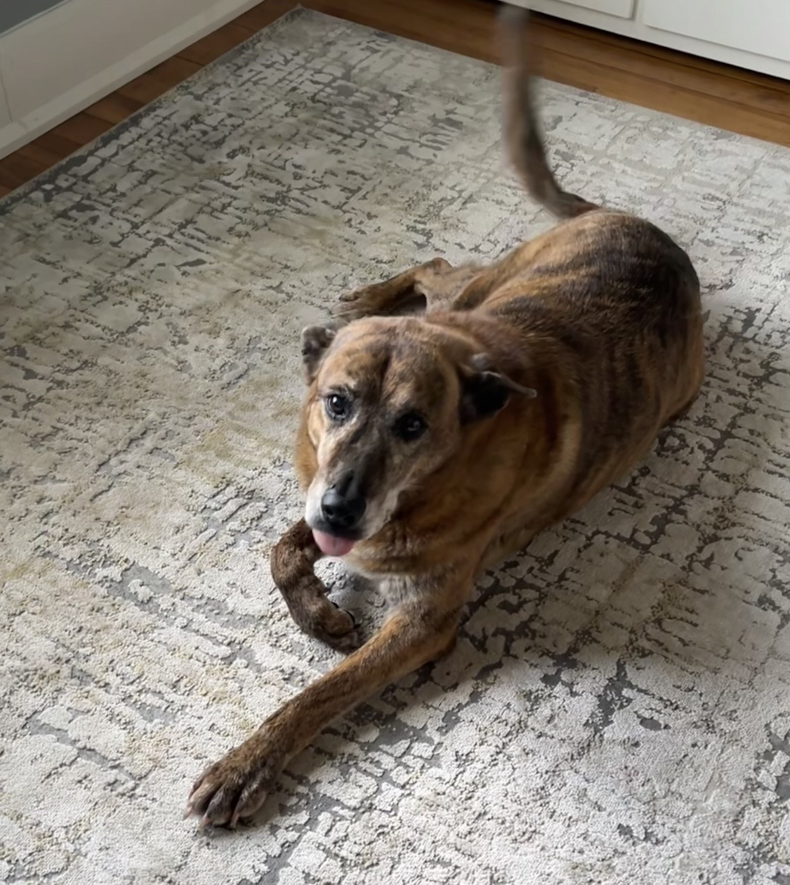

Estudante de Engenharia de Software em Brasília, apaixonada por comunidade. Acredito que a tecnologia existe para gerar impacto real — conectando pessoas, saberes e causas.
"Vejo gente querendo ajudar, mas sem saber como. Vejo gente querendo aprender, mas sem acesso. Então decidi criar um lugar que conecta essas duas partes."
— Clarice NunesO Give&Grow nasceu da percepção de que existe um espaço enorme entre pessoas que têm algo a oferecer — um tempo, uma habilidade, uma vontade — e causas que precisam exatamente disso. Falta um espaço simples, gratuito e sem burocracia que una essas pontas.
A ideia é criar uma rede de troca real: inglês, tecnologia, artesanato, voluntariado com ONGs, visitas a lares de idosos — tudo organizado em eventos semanais e mensais, online e presencial, no Distrito Federal.
Sempre participei de trabalhos voluntários, mas a rotina corrida de faculdade tornava difícil dedicar tempo. Comecei a pensar em como usar tecnologia para facilitar esse processo.
A partida da minha cachorra Max me tocou profundamente e me deu coragem de transformar a dor em ação. Nasceu o PatasDF — e com ele, a vontade de ir além dos animais.
Percebi que o mesmo problema existia em outras causas: gente querendo ajudar idosos, ensinar inglês, fazer crochê, apoiar o meio ambiente — sem saber onde.
Uma plataforma comunitária que organiza eventos, conecta pessoas e facilita o voluntariado no DF — com o PatasDF como uma das causas dentro do ecossistema.
Sempre gostei muito de animais. Eles me ensinaram sobre amor incondicional, presença e a importância de cada vida — por menor que pareça.

Meu primeiro cachorro adotado. Um vira-lata cheio de energia e personalidade que me ensinou desde cedo que amor não tem raça.

Me acompanhou durante meu intercâmbio e nos momentos mais difíceis. Sua partida foi o que me deu coragem de criar o PatasDF.
Ter vivido com o Bolt e a Max me mostrou de perto o quanto um animal resgatado transforma uma casa em lar. São dois vira-latas sem pedigree — que foram tudo.
Quando o Bolt partiu, eu estava fora do Brasil — e foi a Max quem sentiu minha dor. Com a partida dela, surgiu uma vontade grande de fazer algo. Não deixar que a dor ficasse parada.
O PatasDF começou como uma forma de honrá-los. E o Give&Grow cresceu como a visão maior: usar tecnologia para conectar pessoas e causas que importam.
🌿 Em memória do Bolt & da Max
"Obrigada por me ensinar que amor de cachorro é incondicional. Vocês viraram um projeto que pode ajudar muitos animais — e muito mais."
O Give&Grow e o PatasDF são desenvolvidos como projetos pessoais durante o meu curso de Engenharia de Software, conectando o aprendizado técnico da faculdade com problemas reais da comunidade do Distrito Federal.
A proposta é usar ferramentas gratuitas e acessíveis para criar plataformas que qualquer pessoa possa usar sem custo — sem precisar criar conta, sem burocracia.
Cada peça foi uma oportunidade de aprender algo novo — desde automações no Google Apps Script até pensar na experiência de quem usa o site pelo celular.
Tem alguma sugestão, quer colaborar com o Give&Grow ou simplesmente quer dizer oi? Entra em contato!